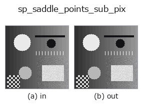

subpix op• Data kinds: image → contour
• Call: fullseye.apply(img, "sp_saddle_points_sub_pix", a=0.5, b=0.5) (2-D model = एक image + दो scalar knobs a,b∈[0,1])
• HALCON समकक्ष: saddle_points_sub_pix (अर्थ और parameters समझने के लिए HALCON reference उपयोगी है)

*Figure synthetic 128×128 input पर सच में चलाकर मिला output है। बाईं ओर input, दाईं ओर output। Point clouds ऊपर से देखे गए scatter के रूप में (brightness = z), 1-D series line के रूप में, volumes z दिशा में maximum-intensity projection के रूप में, videos बीच के frame के रूप में, complex images amplitude के रूप में, और जो return values चित्र नहीं बन सकते वे स्वयं values के रूप में दिखाए जाते हैं।*
Knob a को बदलकर (0.1 / 0.5 / 0.9, दूसरा knob default पर):
▸ sp_saddle_points_sub_pix: knob a को बदलने का figure (docs site)
*Knob b output नहीं बदलता (मापा गया: 0.1 / 0.5 / 0.9 पर एक जैसा)।*
दूसरी images पर भी (synthetic scene / photo / coins। ऊपर की row में inputs, नीचे की row में उनके outputs। Knobs default पर):
▸ sp_saddle_points_sub_pix: दूसरी images पर output (docs site)
*चौथा column colour (H,W,3) input है। यह op channels को पार किए बिना colour संभालता है (colour channel को तीसरे spatial axis की तरह convolve नहीं करता)।*
Gray value surface के saddle points को sub-pixel सटीकता से पहचानता है (HALCON saddle_points_sub_pix के समकक्ष)।
> नीचे का विस्तृत विवरण मूल text में है — सारांश और headings का अनुवाद हो चुका है।
3x3 の 2 次曲面フィットのヘッセ行列が不定符号（det H < 0、両主曲率の符号が逆）になる画素を鞍点候補とし、勾配 0 点がセル内（|dx|,|dy| <= 0.5）に収まるものだけを残す。a は鞍点の強さ（より小さい方の主曲率の絶対値）のしきい値を 1e-4〜0.0201 に振る（thr = 1e-4 + 0.02*a）。b は未使用。戻り値は CONTOUR、座標の単位は入力画像のピクセル。
• gallery2d_geometry family guide
• measurement_uncertainty — Measurement uncertainty और calibration — 'हम माप रहे हैं' कहने के लिए क्या चाहिए
• Sample data catalog (DL URL / license) — 2-D के लिए skimage.data (BSD/public) + synthetic, 3-D के लिए real data sources (Stanford/PDS आदि) के DL URL।
• Operators का स्रोत और संदर्भ — इस op family के मूल research/methods के स्रोत।
• Algorithm का मानक स्रोत (लेखक, वर्ष) और उपयोग ऊपर की family usage guide में दिए गए हैं।
नीचे का program सच में चलता है, यह जाँचा गया है (figure वाला ही input)। Studio की help में यह block buttons बन जाता है, जिनसे इसे वहीं load करके चलाया जा सकता है।
sp_saddle_points_sub_pix 0.50 0.50
▸ यह pipeline load करें · Load करके चलाएँ
• gallery2d_geometry — py -3.11 examples/gallery2d_geometry.py
contour को input के रूप में लेते हैं)identity · select_contours · smooth_contours · fit_line_contours · contours_to_region · count_contours · total_length · select_contours_xld
subpix)sp_local_max_sub_pix · sp_local_min_sub_pix · sp_critical_points_sub_pix · sp_plateaus · sp_lowlands_center
*Provenance: ops.py — 2D operator registry. यह per-op note tools/opdocs.py md से अपने-आप generate होता है (हाथ से edit न करें)।*
© 2026 Kazufumi Furuse — Fullseye operator documentation. Licensed under Apache-2.0.